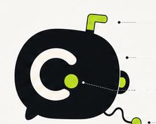
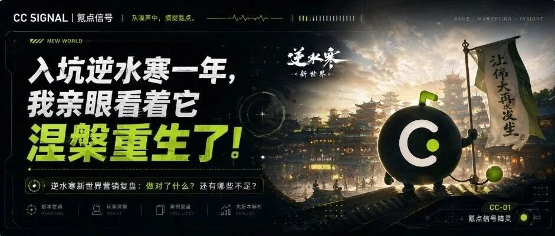
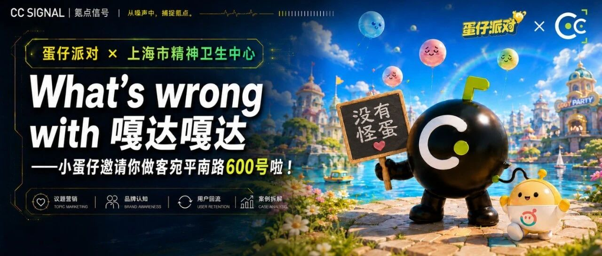

CC 氪点信号
游戏营销观察 · 账号主理人
 2026.07 至今
2026.07 至今
 重点关注：王者荣耀 / 逆水寒
重点关注：王者荣耀 / 逆水寒

CC SIGNAL · 氪点信号
从噪声中，捕捉氪点。
从噪声中，捕捉氪点。
「CC 氪点信号」是一个面向游戏玩家与营销从业者的游戏营销观察公众号。 区别于传统游戏媒体的行业视角，我选择从玩家体验、社区反馈和传播感知出发拆解游戏营销事件—— 不只问"厂商做了什么"，更问"玩家看见什么、产生何种情绪、是否愿意参与/尝试"。
这个定位源自我的双重身份：既是王者荣耀双服、逆水寒、金铲铲的深度玩家， 又是有 KOL 营销、效果投放和媒介优化实战经历的营销人。 用玩家的眼睛看，用营销的脑子想，是这个账号的内容底色。
我负责账号定位、栏目规划、选题储备和内容风格，将四类栏目分别对应 营销事件解释、热点兴趣承接、社交传播创意与新玩家路径分析， 形成从信号监测、玩家洞察到内容输出的完整运营流程：
围绕玩家认知和社区情绪，我建立了一套跨平台信息源体系： 利用 Codex 每日 10:30 自动汇总小红书、抖音、TapTap 及热搜中的新增营销信息， 并按游戏、平台和事件分类，为选题判断和案例研究提供依据。
这套工作流把"刷社区找选题"的随机行为变成了可复用的监测系统—— 营销事件发生后，我能第一时间看到玩家侧的真实反应，而不是等行业媒体二次转述。 下面是这套系统每天自动产出的「每日游戏营销事件看板」，已直接嵌入本页（可点击事件展开热搜详情）：
每日 10:30 自动更新 · 数据覆盖小红书 / 抖音 / TapTap / 热搜
结合长期游戏体验、社区讨论与跨平台热度，我按照 "玩家看见什么 → 产生何种情绪 → 是否愿意参与/尝试" 的路径拆解营销案例，独立完成选题、研究、分析和文章撰写。 营销动作是否有效，最终由玩家的行为和情绪投票——这是我对每一篇复盘的基本立场。

以下文章发布于公众号「CC 氪点信号」，点击卡片可跳转阅读原文：

深度观察 01从七万字更新公告、技术军令状，到648福利、11大联动和"寒王计划"，逆水寒用45天把一次版本更新做成了一场声势浩大的信任重建。本文聊聊"新世界"营销做对了什么、如何重新拉近与玩家的距离，开服后的交子争议又留下了哪些尚未回答的问题。

轻度观察 01《蛋仔派对》联动上海市精神卫生中心，第一眼像又一次猎奇整活，真正看进去，却会发现它把"600号"背后的真实患者带回了视野。拆解这场联动如何借游戏语言谈论心理健康、刷新品牌认知，也反思我们为何总把疾病变成玩笑。
＊ 公众号持续更新中，新文章发布后本页同步收录